Objective
- To understand and practice building effective end-to-end machine learning models using this notebook as a companion to the lecture.
- Some pointers have been provided after various code snippets. These are not specific to this dataset.
Instructions- Clearly explain how each method or function used in the notebook works. - For every code snippet, document the key insights and takeaways.
Imports
::: {#cell-4 .cell _uuid=‘8f2839f25d086af736a60e9eeb907d3b93b6e0e5’ _cell_guid=‘b1076dfc-b9ad-4769-8c92-a6c4dae69d19’ trusted=‘true’ quarto-private-1=‘{“key”:“execution”,“value”:{“iopub.status.busy”:“2025-08-20T08:48:50.948109Z”,“iopub.execute_input”:“2025-08-20T08:48:50.948920Z”,“iopub.status.idle”:“2025-08-20T08:48:50.966232Z”,“shell.execute_reply.started”:“2025-08-20T08:48:50.948893Z”,“shell.execute_reply”:“2025-08-20T08:48:50.965394Z”}}’ execution_count=47}
import numpy as np import pandas as pd import matplotlib.pyplot as pltimport seaborn as snsfrom sklearn.model_selection import train_test_split, GridSearchCVfrom sklearn.compose import ColumnTransformerfrom sklearn.preprocessing import OneHotEncoder, OrdinalEncoder, MinMaxScalerfrom sklearn.pipeline import Pipelinefrom sklearn.linear_model import LogisticRegressionfrom sklearn.naive_bayes import GaussianNBfrom sklearn.tree import DecisionTreeClassifierfrom sklearn.ensemble import RandomForestClassifier, BaggingClassifier, AdaBoostClassifierfrom sklearn.neighbors import KNeighborsClassifierfrom sklearn.svm import SVCimport xgboost as xgbfrom sklearn.metrics import accuracy_score, precision_score, recall_score, f1_score, roc_auc_score, confusion_matrix, classification_report, roc_curve, auc, precision_recall_curve, average_precision_scoreimport osfor dirname, _, filenames in os.walk('/kaggle/input'): for filename in filenames: print(os.path.join(dirname, filename))/kaggle/input/playground-series-s4e10/sample_submission.csv
/kaggle/input/playground-series-s4e10/train.csv
/kaggle/input/playground-series-s4e10/test.csv:::
Reading the Dataset
Pointers- We are using read_csv from pandas to read the file into a DataFrame. - Some formats in which data can be stored include formats such as .tsv, .xlsx, or in SQL Databases. Look up how to read these file types and try loading files as an exercise. - Sometimes data might have to be converted to a tabular format. As an exercise, practice converting and handling data in JSON format as well.
print(f'The shape of the training data is {train.shape}')print(f'The shape of the test data is {test.shape}')The shape of the training data is (58645, 13)
The shape of the test data is (39098, 12)| id | person_age | person_income | person_home_ownership | person_emp_length | loan_intent | loan_grade | loan_amnt | loan_int_rate | loan_percent_income | cb_person_default_on_file | cb_person_cred_hist_length | loan_status | |
|---|---|---|---|---|---|---|---|---|---|---|---|---|---|
| 0 | 0 | 37 | 35000 | RENT | 0.0 | EDUCATION | B | 6000 | 11.49 | 0.17 | N | 14 | 0 |
| 1 | 1 | 22 | 56000 | OWN | 6.0 | MEDICAL | C | 4000 | 13.35 | 0.07 | N | 2 | 0 |
| 2 | 2 | 29 | 28800 | OWN | 8.0 | PERSONAL | A | 6000 | 8.90 | 0.21 | N | 10 | 0 |
| 3 | 3 | 30 | 70000 | RENT | 14.0 | VENTURE | B | 12000 | 11.11 | 0.17 | N | 5 | 0 |
| 4 | 4 | 22 | 60000 | RENT | 2.0 | MEDICAL | A | 6000 | 6.92 | 0.10 | N | 3 | 0 |
Description of Features1. person_age: The age of the loan applicant in years2. person_income: Income of the applicant 3. person_home_ownership: Status of home ownership among Rent, Own, Mortagage and others 4. person_emp_length: Length of employment in years5. loan_intent: Purpose of the loan6. loan_grade: Some metric assigning a quality score to the loan 7. loan_amnt: Loan amount requested by the candidate8. loan_int_rate: Interest rate associated with the loan9. loan_percent_income: Percentage of income to be used for loan payments? 10. cb_person_default_on_file: Indication of whether the applicant has defaulted earlier11. cb_person_cred_hist_length: Length of applicant’s credit history in years12. loan_status: Approval / Rejection of the loan (Target Variable)
Pointers- Use domain knowledge and prior work for guidance, but avoid letting assumptions overly influence decisions. - Allow the data to reveal its own story instead of creating a story first and forcing the data to fit it.
<class 'pandas.core.frame.DataFrame'>
RangeIndex: 58645 entries, 0 to 58644
Data columns (total 13 columns):
# Column Non-Null Count Dtype
--- ------ -------------- -----
0 id 58645 non-null int64
1 person_age 58645 non-null int64
2 person_income 58645 non-null int64
3 person_home_ownership 58645 non-null object
4 person_emp_length 58645 non-null float64
5 loan_intent 58645 non-null object
6 loan_grade 58645 non-null object
7 loan_amnt 58645 non-null int64
8 loan_int_rate 58645 non-null float64
9 loan_percent_income 58645 non-null float64
10 cb_person_default_on_file 58645 non-null object
11 cb_person_cred_hist_length 58645 non-null int64
12 loan_status 58645 non-null int64
dtypes: float64(3), int64(6), object(4)
memory usage: 5.8+ MBInitial Observations:- There are no Null values present in any of the columns- The categorical columns are person_home_ownership, loan_intent, loan_grade, cb_person_default_on_file- The numerical columns are person_age, person_income, person_emp_length, loan_amnt, loan_int_rate, loan_percent_income, cb_person_cred_hist_length
Pointers- A function may report 0 NULL values, but it typically only checks for NaN. Missing values could still be represented in other ways (e.g., blanks, special characters, or placeholders). - Columns may sometimes contain textual representations of numbers (e.g., one, two, three) instead of numeric values.
| id | person_age | person_income | person_emp_length | loan_amnt | loan_int_rate | loan_percent_income | cb_person_cred_hist_length | loan_status | |
|---|---|---|---|---|---|---|---|---|---|
| count | 58645.000000 | 58645.000000 | 5.864500e+04 | 58645.000000 | 58645.000000 | 58645.000000 | 58645.000000 | 58645.000000 | 58645.000000 |
| mean | 29322.000000 | 27.550857 | 6.404617e+04 | 4.701015 | 9217.556518 | 10.677874 | 0.159238 | 5.813556 | 0.142382 |
| std | 16929.497605 | 6.033216 | 3.793111e+04 | 3.959784 | 5563.807384 | 3.034697 | 0.091692 | 4.029196 | 0.349445 |
| min | 0.000000 | 20.000000 | 4.200000e+03 | 0.000000 | 500.000000 | 5.420000 | 0.000000 | 2.000000 | 0.000000 |
| 25% | 14661.000000 | 23.000000 | 4.200000e+04 | 2.000000 | 5000.000000 | 7.880000 | 0.090000 | 3.000000 | 0.000000 |
| 50% | 29322.000000 | 26.000000 | 5.800000e+04 | 4.000000 | 8000.000000 | 10.750000 | 0.140000 | 4.000000 | 0.000000 |
| 75% | 43983.000000 | 30.000000 | 7.560000e+04 | 7.000000 | 12000.000000 | 12.990000 | 0.210000 | 8.000000 | 0.000000 |
| max | 58644.000000 | 123.000000 | 1.900000e+06 | 123.000000 | 35000.000000 | 23.220000 | 0.830000 | 30.000000 | 1.000000 |
Initial Observations:- The columns person_age and person_emp_length have 123 as the maximum value. These data points are erroneous.- Majority of the values for the column loan_status appears to be 0. This can indicate imbalance.- The columns are in different scales. Note person_age, person_income, loan_amnt, loan_percent_income.
Pointers- Can be used to spot the presence of potential outliers- Provides an understanding of the scale and distribution of the data. - Highlights features that may be taking a single constant value. We can remove these
id 0
person_age 0
person_income 0
person_home_ownership 0
person_emp_length 0
loan_intent 0
loan_grade 0
loan_amnt 0
loan_int_rate 0
loan_percent_income 0
cb_person_default_on_file 0
cb_person_cred_hist_length 0
loan_status 0
dtype: int64id 58645
person_age 53
person_income 2641
person_home_ownership 4
person_emp_length 36
loan_intent 6
loan_grade 7
loan_amnt 545
loan_int_rate 362
loan_percent_income 61
cb_person_default_on_file 2
cb_person_cred_hist_length 29
loan_status 2
dtype: int64Pointers- Columns with a number of unique values close to the total number of datapoints (high cardinality) may contribute little value to the model. - The cardinality of categorical features helps in deciding the appropriate encoding technique to apply.
Pointers- Can highlight the dominant categories within categorical features. - Can reveal inconsistencies or typos in category values (rent vs Rent vs RENT, or MORTGAGE vs MORTGAUGE).
Exploratory Data AnalysisEDA is primarily about exploring the dataset. By examining individual features or groups of features, we can uncover patterns and insights that guide the decisions made during modeling.
The target variable
sns.countplot(data=train, x='loan_status')plt.title('Distribution of the target variable')plt.show()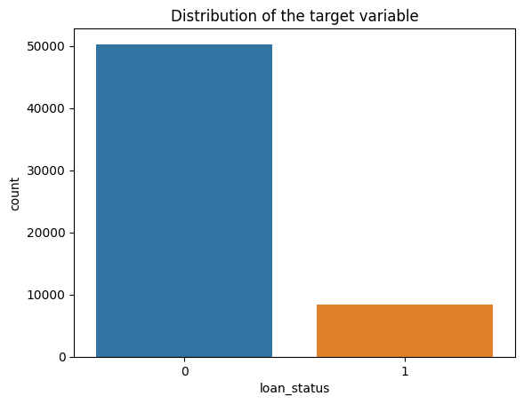
Initial Observations- The dataset appears to be imbalanced- Roughly 14% of the values belong to class 1
Pointers- Class imbalance in datasets is often domain-specific and should be carefully evaluated. - May require the use of imbalance handling techniques (e.g., resampling, synthetic data generation, class weights). - Accuracy alone is not sufficient for imbalanced datasets. As an exercise, consider which alternative metrics would be more appropriate, and why.
Univariate Feature Analysis
fig, axes = plt.subplots(1, 3, figsize=(18, 5))sns.countplot(data=train, x="person_home_ownership", ax=axes[0])axes[0].set_title("Distribution of Home Ownership")sns.countplot(data=train, x="loan_grade", ax=axes[1])axes[1].set_title("Distribution of Loan Grade")sns.countplot(data=train, x="loan_intent", ax=axes[2])axes[2].set_title("Distribution of Loan Intent")plt.xticks(rotation=45)plt.show()plt.tight_layout()plt.show()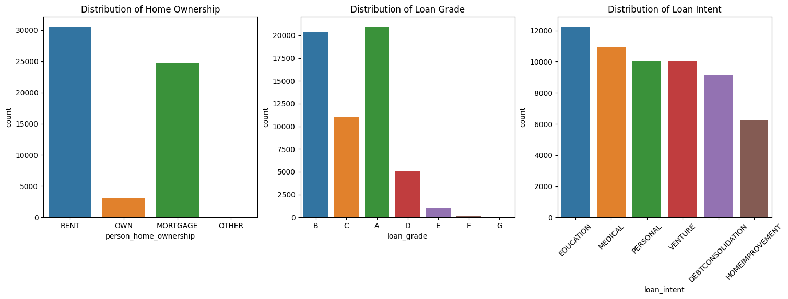
<Figure size 640x480 with 0 Axes>Initial Observations- Some of the categories are more dominant than the others. Can check the connection between categories and the target- If there are unimportant categories, those can be replaced with a new category “Other”- Does the loan_grade column have a natural ordering for the alphabets?
Initial Observations- The value > 120 in the column person_age could be an erroneous entry. Removal would be a good option- In the case of person_income, there are some large values but these could be naturally occuring in the dataset. What are some possible approaches to handle this?
Pointers- While claiming points to be outliers (for ex, using a box plot), be clear as to what method is used to label the point as an outlier- Different methods may select different points as outliers- It is important to distinguish between outlier values that are naturally occuring & those that are erroneous entries- In some cases points that are outliers might be the valuable points. For eg: In a “Money Transaction” dataset, transactions with a very large amount of money could be indicative of Fraud
Initial Observations:- Even though there appear to be outliers in the boxplot of loan_amnt for training data, we can retain them as a similar distribution is observed in the case of test data
Bivariate Feature Analysis
plt.figure(figsize=(15, 6))sns.heatmap(train.corr(numeric_only=True), annot=True, cmap='coolwarm')plt.title('Correlation Matrix')plt.show()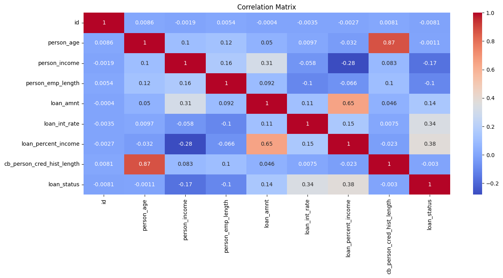
Initial Observations- The income of individuals where the loans were approved appear to be under 500,000
plt.figure(figsize=(10, 6))sns.kdeplot(train[train['loan_status'] == 1]['loan_int_rate'], label='Approved', fill=True)sns.kdeplot(train[train['loan_status'] == 0]['loan_int_rate'], label='Non-Approved', fill=True)plt.title('CDF of Loan Int Rate by Loan Status')plt.xlabel('Loan Int Rate')plt.ylabel('Density')plt.legend()plt.show()/usr/local/lib/python3.11/dist-packages/seaborn/_oldcore.py:1119: FutureWarning: use_inf_as_na option is deprecated and will be removed in a future version. Convert inf values to NaN before operating instead.
with pd.option_context('mode.use_inf_as_na', True):
/usr/local/lib/python3.11/dist-packages/seaborn/_oldcore.py:1119: FutureWarning: use_inf_as_na option is deprecated and will be removed in a future version. Convert inf values to NaN before operating instead.
with pd.option_context('mode.use_inf_as_na', True):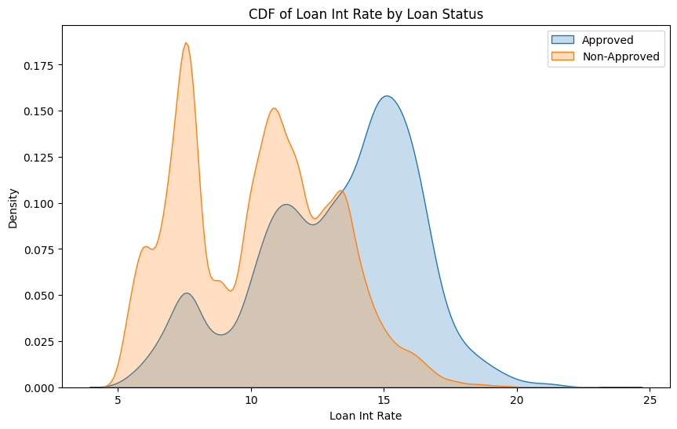
Initial Observations- Loans are more likely to be approved if the interest rates are higher
Creating a Validation Set
Why do we need a Validation dataset?- Train our models to do well on unseen data.- Identify good values for the HyperParameters through Hyperparameter Tuning
Pointers- The use of stratify can help when there are rare / imbalanced classes- Repeatedly using the same validation dataset can indirectly lead to overfitting
Feature Engineering
Preprocessing
ordinal_col = ["loan_grade"]onehot_cols = ["person_home_ownership", "loan_intent", "cb_person_default_on_file"]ordinal_transformer = OrdinalEncoder(categories=[['G', 'F', 'E', 'D', 'C', 'B', 'A']]) onehot_transformer = OneHotEncoder(handle_unknown='ignore')preprocessor = ColumnTransformer( transformers=[ ("ord", ordinal_transformer, ordinal_col), ("ohe", onehot_transformer, onehot_cols) ], remainder="passthrough" )pipeline = Pipeline([ ("preprocessor", preprocessor), ("scaler", MinMaxScaler())])Pointers- Encoding Categorical variables using One Hot Encoding vs Ordinal vs Target vs Frequency- Scaling methods. Is it mandatory to use scaling? Which scaler does well even if there are outliers?- How many features are present after preprocessing?- Should feature selection methods be used?
print(f'The shape of the processed training data is {X_train_processed.shape}')print(f'The shape of the processed validation data is {X_test_processed.shape}')print(f'The shape of the processed test data is {test_processed.shape}')The shape of the processed training data is (46916, 20)
The shape of the processed validation data is (11729, 20)
The shape of the processed test data is (39098, 20)Baseline Model
clf = LogisticRegression(max_iter=1000)clf.fit(X_train_processed, y_train)y_pred_proba = clf.predict_proba(X_test_processed)[:, 1]roc_auc = roc_auc_score(y_test, y_pred_proba)print("ROC AUC Score:", roc_auc)ROC AUC Score: 0.8964524872116788Initial Observations- The ROC AUC score is fairly high but we have to compare the score with other submissions to understand what a good score would be
Pointers- Training the Baseline model is a good point to verify that the data has been preprocessed correctly and is ready for model training- Usually a simple model (something like the Dummy Classifier) is used for the baseline model. The models trained subsequently should at the very least perform better than the baseline
Exploring some basic Models
models = { "Logistic Regression": LogisticRegression(max_iter=1000, random_state=42), "Naive Bayes": GaussianNB(), "Decision Tree": DecisionTreeClassifier(random_state=42), "Random Forest": RandomForestClassifier(random_state=42), "KNN": KNeighborsClassifier(), "SVM": SVC(probability=True, random_state=42), "Bagging": BaggingClassifier(random_state=42), "AdaBoost": AdaBoostClassifier(random_state=42)}def evaluate_model(model, X_train, y_train, X_test, y_test): model.fit(X_train, y_train) results = {} for split, (X, y) in {"Train": (X_train, y_train), "Test": (X_test, y_test)}.items(): y_pred = model.predict(X) y_proba = model.predict_proba(X)[:, 1] if hasattr(model, "predict_proba") else model.decision_function(X) results[split] = { "Accuracy": accuracy_score(y, y_pred), "Precision": precision_score(y, y_pred, zero_division=0), "Recall": recall_score(y, y_pred, zero_division=0), "F1-Score": f1_score(y, y_pred, zero_division=0), "ROC-AUC": roc_auc_score(y, y_proba) } return resultsfinal_results = {}for name, model in models.items(): final_results[name] = evaluate_model(model, X_train_processed, y_train, X_test_processed, y_test)results_df = pd.concat({outer: pd.DataFrame(inner).T for outer, inner in final_results.items()})print(results_df) Accuracy Precision Recall F1-Score ROC-AUC
Logistic Regression Train 0.901100 0.752475 0.455090 0.567164 0.892427
Test 0.902293 0.760437 0.458084 0.571749 0.896452
Naive Bayes Train 0.821234 0.428845 0.770060 0.550897 0.868251
Test 0.821980 0.429677 0.764671 0.550194 0.868560
Decision Tree Train 1.000000 1.000000 1.000000 1.000000 1.000000
Test 0.911757 0.678873 0.721557 0.699565 0.832446
Random Forest Train 0.999936 1.000000 0.999551 0.999775 1.000000
Test 0.950891 0.930031 0.708383 0.804215 0.931919
KNN Train 0.946585 0.909376 0.694012 0.787230 0.975855
Test 0.931196 0.855144 0.622156 0.720277 0.871425
SVM Train 0.932177 0.894452 0.593713 0.713694 0.899614
Test 0.931537 0.888789 0.593413 0.711670 0.900628
Bagging Train 0.992284 0.994831 0.950749 0.972290 0.999826
Test 0.947566 0.901141 0.709581 0.793970 0.912338
AdaBoost Train 0.927722 0.817043 0.634431 0.714250 0.924158
Test 0.931196 0.829138 0.650898 0.729285 0.924505Initial Observations- Most of the models have a poor F1-score. This could be due to the imbalance in the target. Scores can be compared once imbalance handling methods are used- Decision Tree model has overfit on the training dataset but performed poorly on the validation dataset. Tuning hyperparameters such as max_depth would provide more insights- Adaboost and RandomForest models have performed comparitively better and are good candidates for HyperParameter Tuning- It would be better to visualize the results through plots
Pointers- Certain family of models tend to perform well on certain datasets. Running a preliminary training such as the above can give an idea of which models would do well- It is important to have a thorough understanding of how models work, what could affect the performance, what are the hyperparameters & how to tune them, some approaches that could potentially improve the score
metrics = ["Accuracy", "Precision", "Recall", "F1-Score", "ROC-AUC"]for metric in metrics: plt.figure(figsize=(10,6)) train_scores = [final_results[m]["Train"][metric] for m in models.keys()] test_scores = [final_results[m]["Test"][metric] for m in models.keys()] x = np.arange(len(models)) width = 0.35 plt.bar(x - width/2, train_scores, width, label='Train') plt.bar(x + width/2, test_scores, width, label='Test') plt.xticks(x, models.keys(), rotation=45, ha='right') plt.ylabel(metric) plt.title(f"Model Comparison - {metric}") plt.legend() plt.tight_layout() plt.show()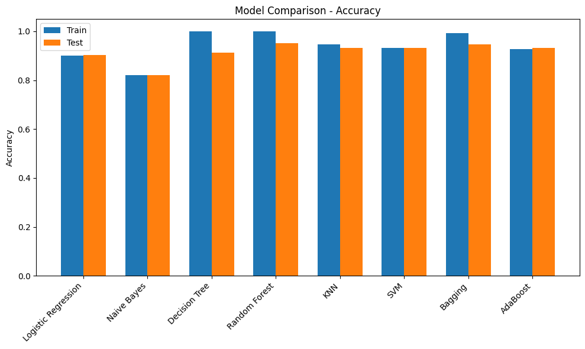
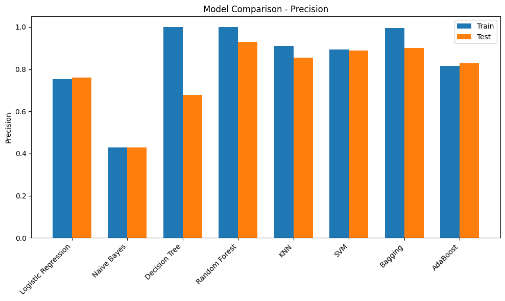
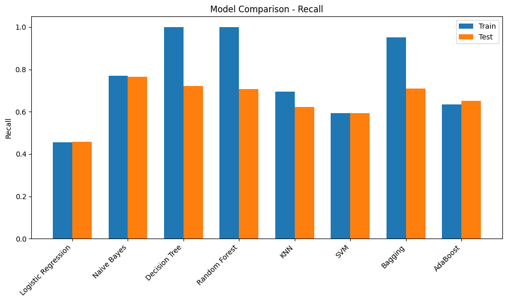
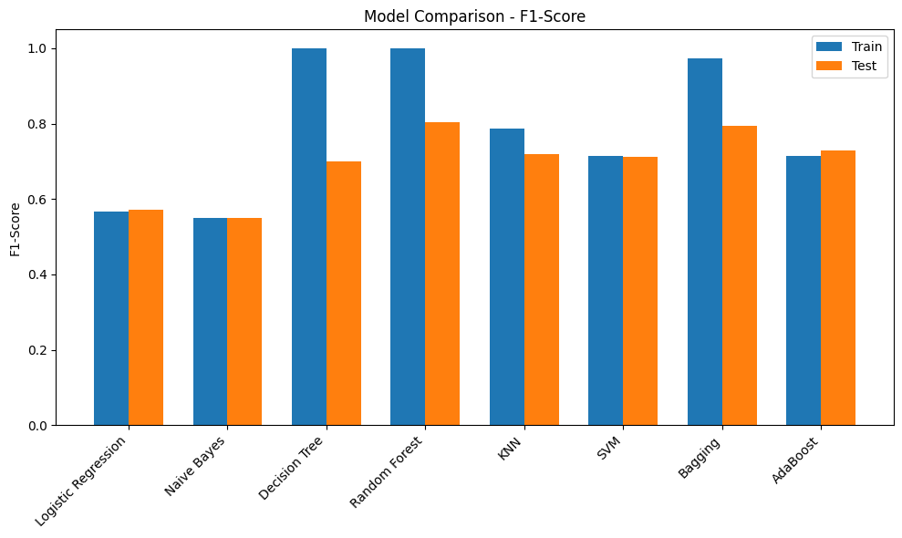
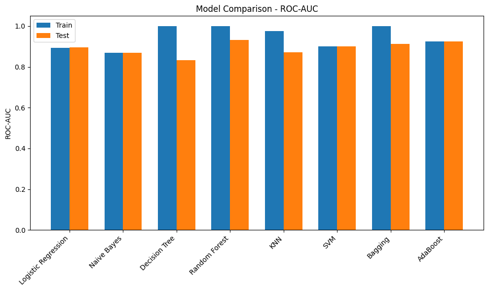
Hyperparameter Tuning
def evaluate_best_model(model, X_test, y_test): y_pred = model.predict(X_test) y_proba = model.predict_proba(X_test)[:, 1] if hasattr(model, "predict_proba") else model.decision_function(X_test) return { "Accuracy": accuracy_score(y_test, y_pred), "Precision": precision_score(y_test, y_pred, zero_division=0), "Recall": recall_score(y_test, y_pred, zero_division=0), "F1-Score": f1_score(y_test, y_pred, zero_division=0), "ROC-AUC": roc_auc_score(y_test, y_proba) }print("Best Random Forest Params:", rf_grid.best_params_)print("Random Forest Test Performance:", evaluate_best_model(best_rf, X_test_processed, y_test))print("\nBest AdaBoost Params:", ada_grid.best_params_)print("AdaBoost Test Performance:", evaluate_best_model(best_ada, X_test_processed, y_test))Best Random Forest Params: {'max_depth': None, 'min_samples_split': 5, 'n_estimators': 100}
Random Forest Test Performance: {'Accuracy': 0.9514025066075539, 'Precision': 0.9323899371069182, 'Recall': 0.7101796407185629, 'F1-Score': 0.8062542488103331, 'ROC-AUC': 0.9348929638486224}
Best AdaBoost Params: {'learning_rate': 1.0, 'n_estimators': 200}
AdaBoost Test Performance: {'Accuracy': 0.9324750618126012, 'Precision': 0.828101644245142, 'Recall': 0.6634730538922156, 'F1-Score': 0.7367021276595744, 'ROC-AUC': 0.933991337337255}Initial Observations- The models have a slightly higher score after tuning the hyperparameters
Pointers- Hyperparameter tuning is about finding the correct settings for the model to extract the best performance- This could be a time consuming process.- There are a few more methods for Tuning Hyperparameters such as RandomisedSearchCV and OPTUNA
XGB Classifier
xgb_clf = xgb.XGBClassifier(use_label_encoder=False, eval_metric='auc')param_grid = { 'n_estimators': [100, 200, 300], 'max_depth': [3, 5, 7], 'learning_rate': [0.01, 0.1, 0.2], 'subsample': [0.7, 0.8, 1.0], 'colsample_bytree': [0.7, 0.8, 1.0]}grid_search = GridSearchCV( estimator=xgb_clf, param_grid=param_grid, scoring='accuracy', cv=3, verbose=1, n_jobs=-1)grid_search.fit(X_train_processed, y_train)print("Best Parameters:", grid_search.best_params_)best_model = grid_search.best_estimator_y_pred = best_model.predict(X_test_processed)print("Test Accuracy:", accuracy_score(y_test, y_pred))Fitting 3 folds for each of 243 candidates, totalling 729 fits
Best Parameters: {'colsample_bytree': 0.8, 'learning_rate': 0.1, 'max_depth': 5, 'n_estimators': 200, 'subsample': 1.0}
Test Accuracy: 0.9520845766902549# best_model = xgb.XGBClassifier(use_label_encoder=False, eval_metric='auc',colsample_bytree= 0.8, learning_rate= 0.1, max_depth= 5, n_estimators= 200, subsample= 1.0 )# best_model.fit(X_train_processed, y_train)# y_pred = best_model.predict(X_test_processed)# print("Test Accuracy:", accuracy_score(y_test, y_pred))Pointers- Boosting based models tend to perform well on Tabular datasets and had dominated Kaggle Leaderboards for a long time- Hyperparameter Tuning for the XGB model could be slightly challenging. Referring to resouce material and experimenting is recommended
Model Evaluation
- The performance of the model on the evaluation metric is usually the primary concern in an ML Projects. This decides whether to retain features / outliers, create new features, try out new preprocessing methods…etc.- It becomes very important to understand the evaluation metric. This could include its mathematical formulation, the range of values it takes and what those values mean in the context of model training.
ROC AUC curve
y_proba = best_model.predict_proba(X_test_processed)[:,1]fpr, tpr, _ = roc_curve(y_test, y_proba)roc_auc = auc(fpr, tpr)plt.figure(figsize=(6,4))plt.plot(fpr, tpr, label=f"AUC = {roc_auc:.2f}")plt.plot([0,1],[0,1],'--',color="gray")plt.xlabel("False Positive Rate")plt.ylabel("True Positive Rate")plt.title("ROC Curve")plt.legend()plt.show()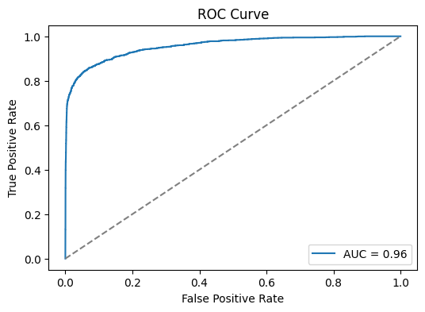
Confusion Matrix
cm = confusion_matrix(y_test, y_pred)plt.figure(figsize=(6,4))sns.heatmap(cm, annot=True, fmt='d', cmap='Blues', xticklabels=[0,1], yticklabels=[0,1])plt.xlabel("Predicted")plt.ylabel("Actual")plt.title("Confusion Matrix")plt.show()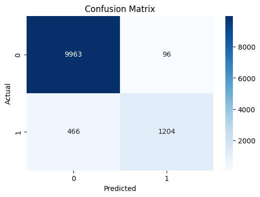
Pointers- Provides a quick count of the points that are classified correctly and incorreclty
Classification Report
Classification Report:
precision recall f1-score support
0 0.96 0.99 0.97 10059
1 0.93 0.72 0.81 1670
accuracy 0.95 11729
macro avg 0.94 0.86 0.89 11729
weighted avg 0.95 0.95 0.95 11729
Pointers- Provides a snapshot of the performance of the model among the evaluation metrics such as Precision, Recall, F1-score & Accuracy across the various classes- Allows to easily identify the classes where the model performs poorly. This can allow further analysis on the misclassifications.- One approach could be to filter the points that are misclassified and experiment with this subset to understand the cause for misclassifications.
Feature Importance
xgb.plot_importance(best_model, importance_type="gain", height=0.5, max_num_features=15)plt.title("Top 15 Feature Importances (Gain)")plt.show()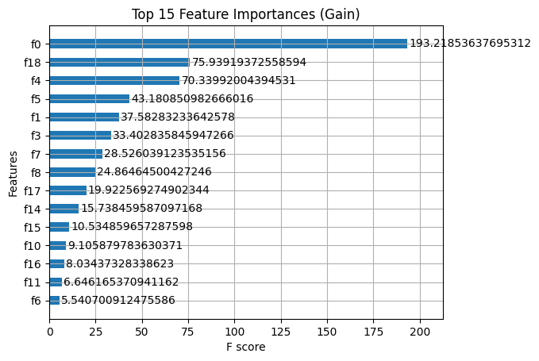
Pointers- Feature importance is a valuable tool for explaining model behaviour.- This can be used to experiment with feature selection
Submission
submission = sample_submission.copy()submission['loan_status'] = final_probasubmission.to_csv("submission.csv",index=False)display(submission.head(10))| id | loan_status | |
|---|---|---|
| 0 | 58645 | 0.985335 |
| 1 | 58646 | 0.017063 |
| 2 | 58647 | 0.511890 |
| 3 | 58648 | 0.010022 |
| 4 | 58649 | 0.038862 |
| 5 | 58650 | 0.926172 |
| 6 | 58651 | 0.000750 |
| 7 | 58652 | 0.006691 |
| 8 | 58653 | 0.384641 |
| 9 | 58654 | 0.020374 |